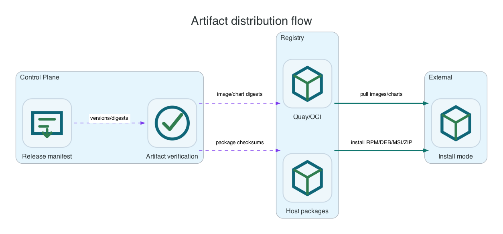

Reference / Release
Artifact distribution and verification.
Li9 S3 is delivered through separate artifact families for runtime images, the OpenShift operator and catalog, Helm charts, Linux packages, Windows packages, and documentation. Administrators should install from a consistent release set and verify digests or checksums before rollout.
Artifact Families

| Artifact Family | Used By | Verification |
|---|---|---|
| Runtime images | Operator, Helm, and mirrored deployments. | Verify image digest and registry pull access before rollout. |
| Operator catalog and bundle | OpenShift OLM installation. | Verify catalog image, bundle image, package name, channel, and CSV readiness. |
| Helm chart | Kubernetes chart installation. | Verify chart version, chart digest or SHA-256, and rendered manifests. |
| Linux packages | RPM and DEB host installations. | Verify package checksums and package-manager signature/trust configuration. |
| Windows packages | MSI and ZIP host installations. | Verify package checksums and the Windows package source before installation. |
| Documentation content | OpenShift documentation endpoint and platform-specific docs. | Verify the published documentation URL and runtime documentation path. |
Distribution Rules
- Use one coherent release set for the selected installation mode.
- Pin images by digest for production or disconnected environments.
- Verify RPM, DEB, MSI, ZIP, and chart checksums before installation.
- Mirror images, chart artifacts, and host packages into internal repositories before using an air-gapped installation path.
- Keep release metadata with the change record so operations teams can reproduce the installed state.
Artifact Checks
oc image info quay.io/li9/li9-operators:li9-s3-bundle-v1.1.0-alpha.40
oc image info quay.io/li9/li9-operators:li9-s3-gateway-v1.1.0-alpha.15
: "${LI9_HELM_REPO:?set to the public Helm repository or approved internal mirror URL}"
helm repo add li9-s3-storage "${LI9_HELM_REPO}"
helm repo update li9-s3-storage
helm show chart li9-s3-storage/li9-s3-storage --version 1.1.0-alpha.15
helm template li9-s3 li9-s3-storage/li9-s3-storage --version 1.1.0-alpha.15 --values values-li9-s3.yaml > rendered.yamlAdministrator Readiness Checklist
| Check | Why It Matters |
|---|---|
| Digest-pinned manifests | Prevents accidental image drift during reproducibility checks. |
| OLM install from catalog | Confirms the operator is discoverable through OpenShift Software Catalog. |
| Helm install from public Pages or approved internal mirror | Confirms the selected chart delivery path works. |
| Native package install on fresh VMs | Confirms host prerequisites and service registration are complete. |
| Airgap mirror documentation | Confirms operators can mirror images and packages into internal registries. |